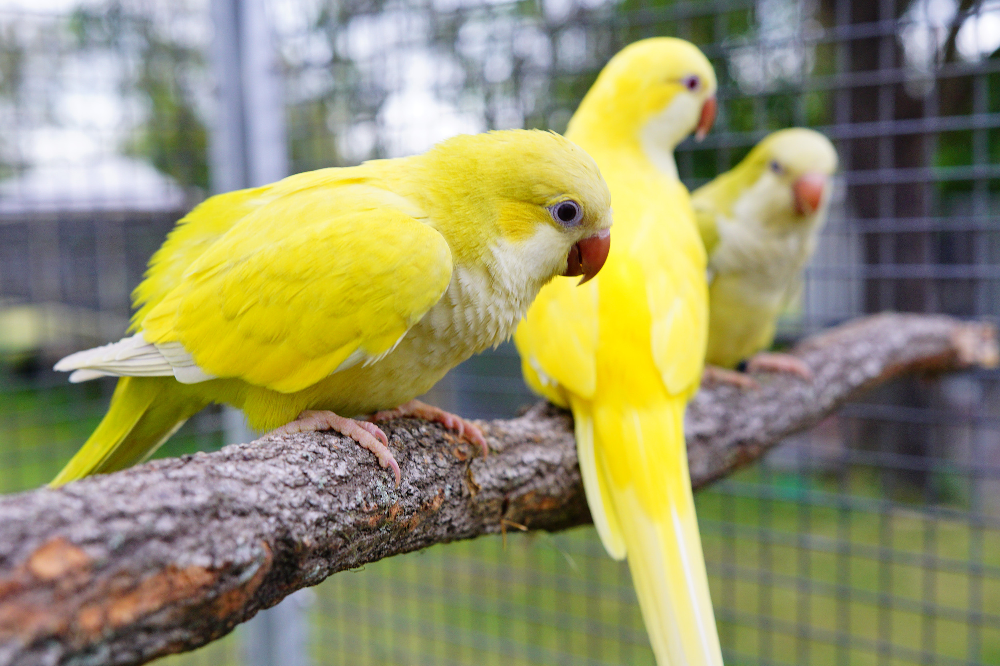

Barevné mutace

Mutace obecně
Mutace u papoušků jsou genetické variace, které mění barvu jejich peří, očí, nebo jiné fyzické vlastnosti. Tyto změny se objevují v důsledku náhodných změn v genetickém kódu, tedy mutací. Mutace mohou nastat přirozeně v přírodě, nebo být výsledkem šlechtění, kdy chovatelé vybírají jedince s neobvyklými rysy a rozmnožují je, aby posílili a udrželi tyto vlastnosti v populaci.
Konkrétní mutace
1. Green
2. Olive
3. Blue
5. Pallid
6. Opaline
7. Lutino
8. Albino
Jak mutace vznikají
1. Přirozené mutace: Mohou vzniknout náhodně v důsledku chyb při kopírování DNA během dělení buněk nebo vlivem vnějších faktorů, jako je záření či chemikálie.
2. Šlechtění: Chovatelé často vybírají jedince s neobvyklými barvami a dále je kříží, aby získali nové barevné mutace. Opakovaným křížením mohou fixovat určitou mutaci v populaci papoušků.
Green

Jedná se o základní originální zbarvení ve volné přírodě. Z tohoto zbarvení vychází všechny ostatní mutace.
Olive
Tato mutace je charakteristická svými tmavě zeleznými až olivovými tóny.
Blue
Jedná se o modře zbarvenou mutaci, patří mezi nejkrásnější.
Pallid

Tato mutace je charakteristická svými bledými tóny.
Opaline
Je barevná mutace, která způsobuje šíření pigmentace po zádech, šíji, zadečku a křídlech.
Lutino
Tato mutace je charakteristická pro svou žlutou barvu.
Albino
Tato mutace je charakteristická pro svou bílou barvu.